サンライズ瀬戸で東京から松山まで帰ってきた。
公開日：
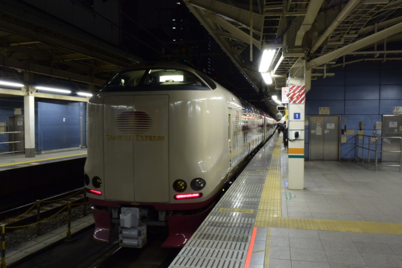
さて、出国（四国から出ること）するたびに色んな方法で帰ってきている俺氏ですが、それもそろそろネタが尽きてきた。
東京 → 松山
- 高速バス：バスはあまり好きじゃないので乗る気ない
- 飛行機：JAL、ANA、ジェットスター（生まれて初めて LCC 乗ったった。 - だるろぐ）
- 電車：新幹線＋岡山から特急しおかぜ、サンライズ瀬戸＋宇多津から特急しおかぜ
大阪 → 松山
- 高速バス：バスはあまり好きじゃないので（ｒｙ
- 飛行機：JAL、ANA、ピーチ（ピーチで松山から大阪まで行ってみたった。 - だるろぐ）
- 電車：新幹線＋岡山から特急しおかぜ
- 船：オレンジフェリー＋バス（大阪・南港から愛媛・松山まで船で帰ってきた。 - だるろぐ）
今回は、東京から松山まで、電車で。寝台特急サンライズ瀬戸に乗ってきました。寝台列車乗るの、生まれて初めて！ ずっと乗りたいと思っていたのだけど、ずるずる後回しになっていたのですが、なんか最近寝台列車が軒並み廃止されているのを見て、今乗らなきゃ一生乗る機会がないな、と思った次第。
サンライズ瀬戸
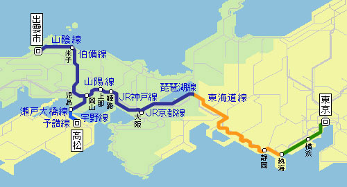
サンライズ瀬戸は、東京＝高松（香川県）を結ぶ寝台特急です。大都会・岡山までは、出雲まで行くサンライズ出雲と連結されています。運行は一日一往復で、東京発は22:00、9番線から。東海道線のあんまり使っていない方のホームですね。
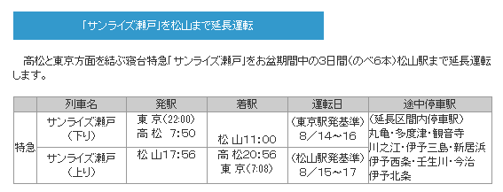
（2009年のJR四国のプレスリリースより）
かつては高松に寄って松山まで戻ってくる“松山行き”もあったそうですが（あぁ、それがあれば毎回使うのに！！）、あんまり儲からなかったのか、廃止されています。松山着が11時になるので、めちゃくちゃゆっくり寝られそう！
チケットの入手
サンライズ瀬戸のチケットは、1カ月前からみどりの窓口で購入できます。いろんな会社を跨ぐ関係で、ネットでの販売は対応していないとの由。今時これは不便……。
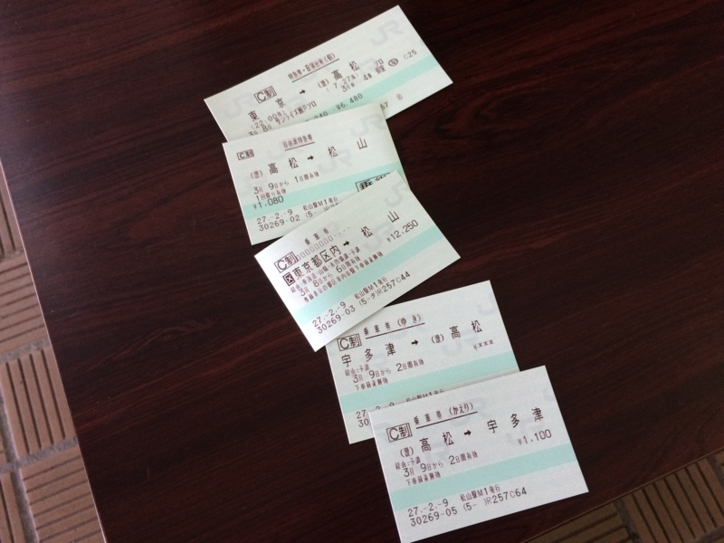
わざわざ松山駅まで行って買ってきました。ほんとは宇多津で特急しおかぜに乗り換えなのですが、10分でも長く寝たいので、サンライズ瀬戸の切符は高松まで。高松＝松山間の特急券も買ったので、切符の枚数がえらいことになりました。ちなみにお値段は……忘れたし、計算するのめんどいのですが、個室（ソロ）で2万ちょい。ジェットスターなら 8,000円（飛行時間1.5時間）で帰ってこれることを考えると高いけれど、ビジネスホテルで一泊したと思えば我慢できる。個室じゃない“ごろ寝シート”ならさらに安く乗れるみたいです。
出発
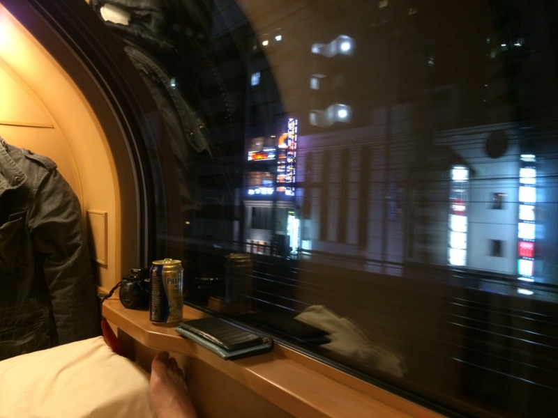
入線は21:45分ごろ。22:00、定刻通り出発。
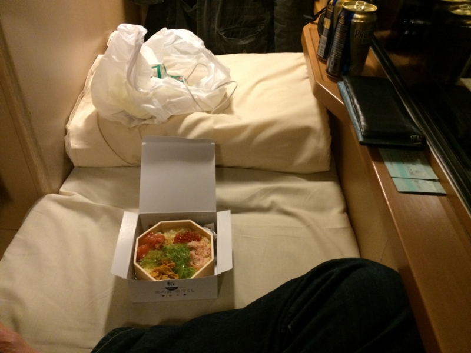
東京駅で買った駅弁をモグモグしながら、ビールをグビッとやる。
ちなみに、サンライズ瀬戸には車内販売がない（ジュース類の自販機はある）。なので、ビールやおつまみは事前にキオスクや売店などで仕入れておくこと。ただ、21:00過ぎでも売店は空いているが、品数はめっきり減っている……。どこかのデパートに寄れるなら、そこで仕入れてもいいかもしれないね。
あと、コインシャワーのチケットとタオルの販売も、ついこの間終わってしまったのだそう。記念のために買おうと思っていたのだけど……合理化のためとはいえ悲しい。なお、今回は伊豆で温泉に入りまくった帰りでもあり、コインシャワーは使っていない。
寝台
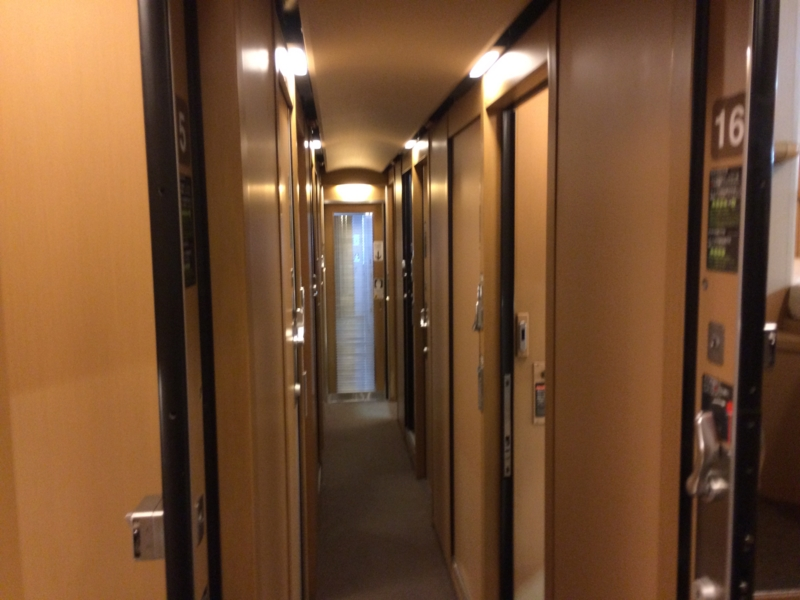
自分が乗ったB寝台（ソロ）は通路を挟んで左右、2階作りになっている。
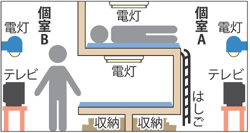
構造的には、最近流行りの脱法ハウスによく似ているかも。
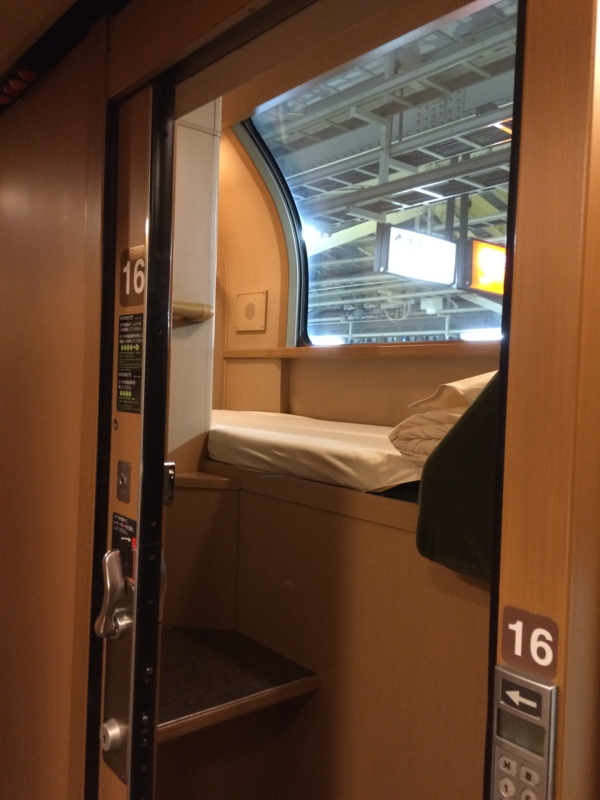
今回自分がとった部屋は二階。とくに指定したわけではなく、勝手にそうなってた。空が見えて、ちょっとうれしい。ちょっと狭いけれど、秘密基地みたいな感じでテンション上がる。
手前にラジオかな？ 使わなかったのでよくわかんなかったけど。あと、コンセントが一つある。奥には、機内持ち込み可能なスーツケースがぴったり収まる程度の棚に、上着をかけるハンガー。あとは浴衣とシーツが備え付けてある。
階段は割と急で、上り下りには気を使う。階段下には、ゴミ袋とスリッパを装備。
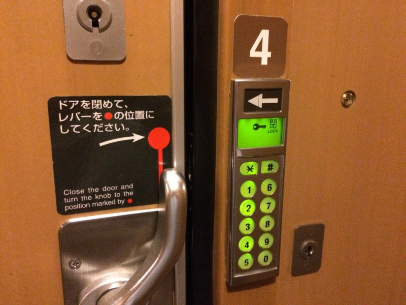
外出時は暗証番号でロックをかけることが可能。もちろん、内側からも鍵をかけることができる。車掌さんの改札があるので鍵をかけずにおいたのだけど、約一名、わしの寝こみを襲おうと侵入してきたお兄ちゃんがいたので（部屋を間違えたらしい）、ちゃんと鍵はかけておいた方がいいかもしれない。
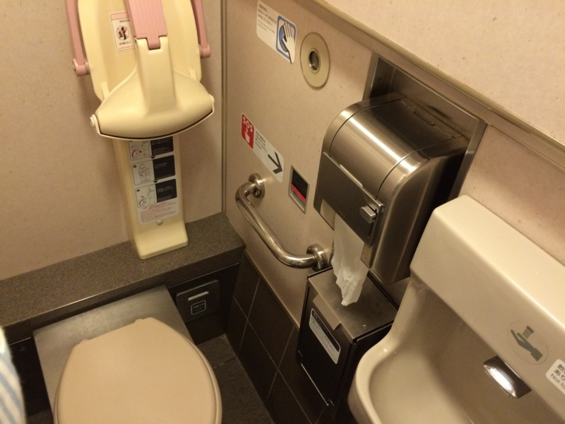
ちなみにトイレ。記念にウンコしておいた。
大都会・岡山
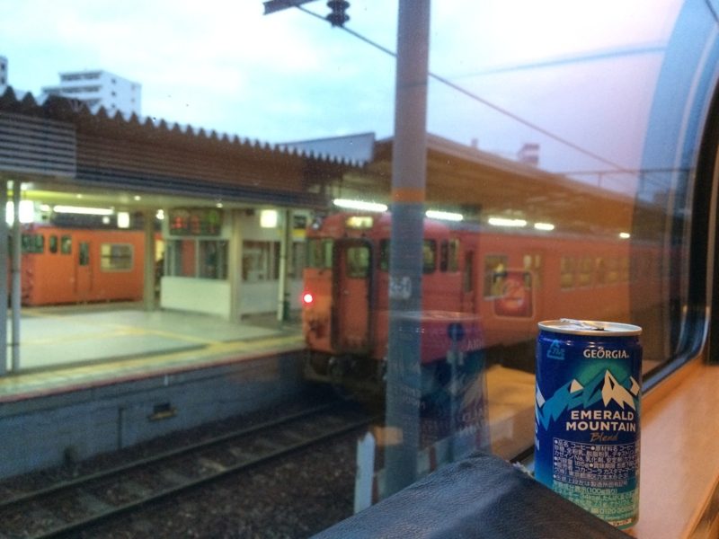
横浜を過ぎる辺りまで夜景を楽しみ、カーテンを閉めて就寝（駅はまぶしいので閉めないと寝られないと思う！）。起きたら大都会・岡山の手前だった。めちゃくちゃ熟睡してしまったようだ。
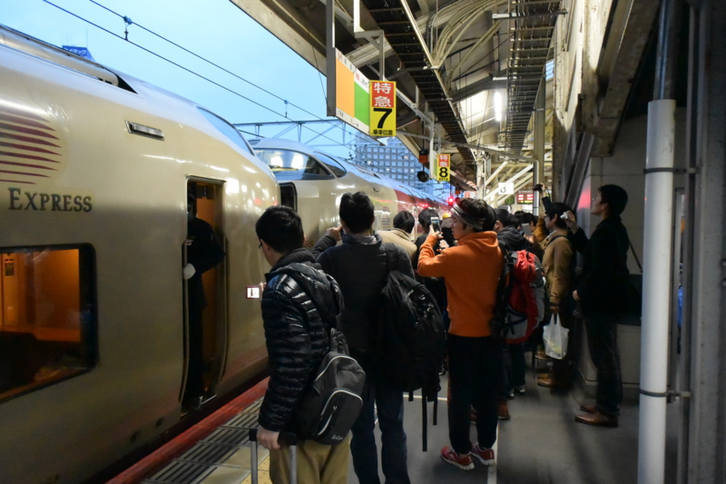
6:30頃、大都会・岡山着。
岡山では、サンライズ瀬戸と出雲の連結解除が行われる。写真を撮ってみようかと思ったが、すでに人だかりができていて、自分はそれをとっただけで満足してしまった。
そのあと、お腹が空いたので売店でご飯を買おうとしたが、発車のアナウンスが放送されたので、急いでねぐらに戻った……が、列車の遅れで10分弱ほど待たされた。これだったら売店でご飯買ったのに……。
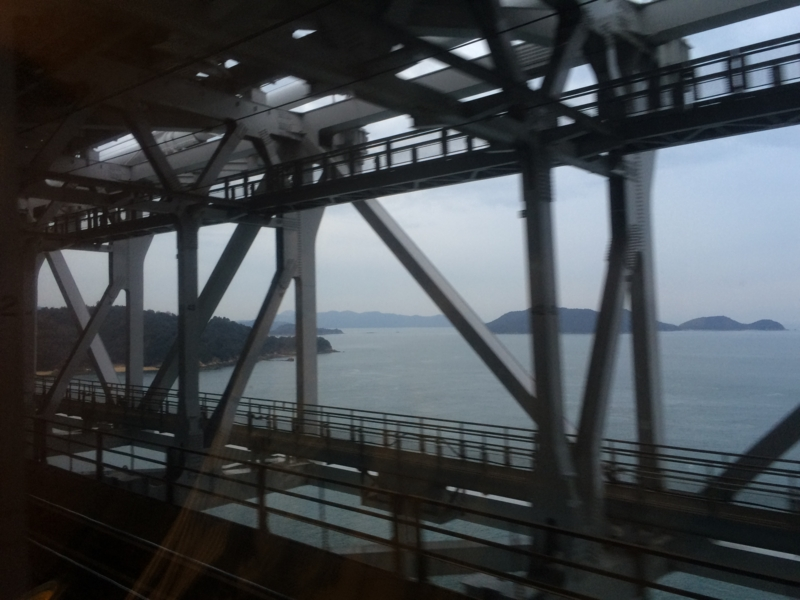
ちょっと名残惜しいけれど、そろそろ降りる準備をせねばならぬ。瀬戸大橋からの眺めを横目に、パタパタと荷物をまとめる。
高松
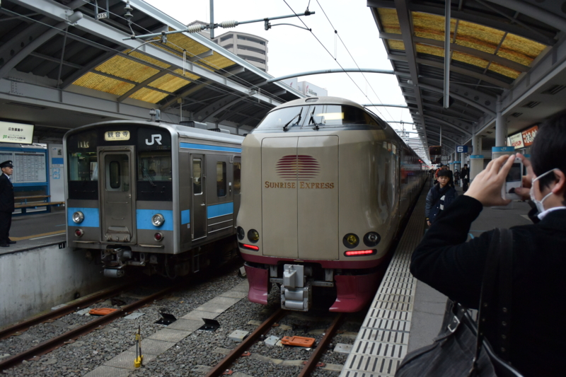
7:30頃、高松着。
高松に来たのは初めてなので、エキナカでうどんでも食うかと思った……のだけど、店を見ると、あんまり気乗りがしなかったので、そのままサンライズ瀬戸の向かい側に止まっていた特急いしづち（途中で特急しおかぜと連結）に乗る。2両編成（先頭が指定席、後ろが自由席）でかわいい。宇多津から乗る場合は指定席の方が確実だが、始発の高松から乗るのならば自由席で十分。楽に座れる。
10:00頃、松山着。
ぶっちゃけ、寝台特急よりも予讃線特急の方がしんどかった。お腹へったので、松山駅のカレー屋さんでご飯食べようかと思ったが、残念ながら11時開店だった。タクシーで自宅まで帰って、今回の旅行は終わり。おつかれさま、自分！